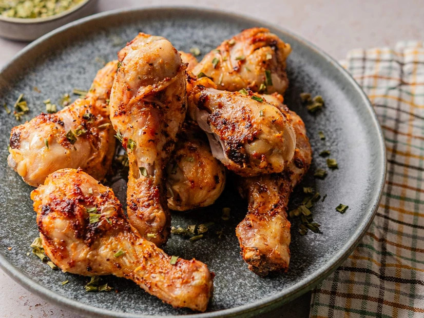

⏳ 30 minutos

Ingredientes
- 8 pedaços de frango
- 1 ovo
- 1 xícara de farinha de rosca
- 1 colher de farinha de trigo
- 1 colher de azeite
- 1/2 colher de sal
- Pimenta-do-reino a gosto
Modo de preparo
- Tempere o frango com sal e pimenta.
- Bata o ovo em um prato raso.
- Misture as farinhas em outro prato.
- Passe o frango no ovo e depois na mistura de farinhas.
- Pincele levemente com azeite.
- Preaqueça a Air Fryer por 3 minutos.
- Asse a 200 °C por 20–25 minutos, virando na metade.
- Sirva quente.
Dica: ajuste o tempo conforme o tamanho dos pedaços e o modelo da sua Air Fryer.